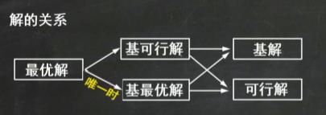

运筹学
线性规划规划问题
线性规划问题的建模
设置决策变量
列目标函数
系数-->价值系数
列约束条件
资源限量
工艺系数
列非负条件
化标准型
目标函数最大 目标替换
约束条件等式 加/减变量 小于的加大于的减
资源限量非负 同乘 -1
决策变量非负 变量替换
图解法
唯一最优解
无穷多最优解
无界解
无可行解
结论
若线性规划问题存在可行解,则问题的可行域是凸集
每个基可行解对应可行域的一个顶点
如果有最优解,必定在某个顶点上得到
单纯形法
化标准型
列初始单纯形表
初始单纯形表检验数和价值系数对应相等
单纯形表中基变量的检验数为0
最优性检验
基变换,直至找到最优解
解的判别
检验数都小于等于0,且无非基变量检验数等于0,有唯一最优解
检验数都小于等于0,且有非基变量检验数等于0,有无穷多最优解
有非基变量检验数大于0,但该检验数所在列的系数均小于0,有无界解

Last modified: 30 四月 2024